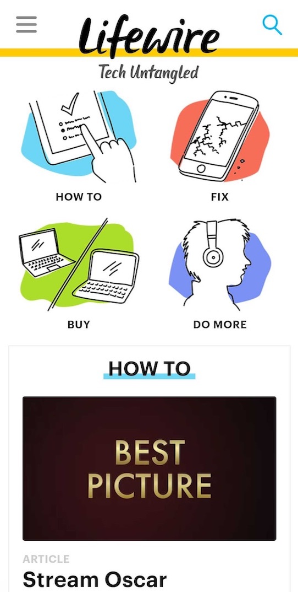

Design Principles Document
Cristhians Ruiz
Repetition
Lifewire
lifeware.com In this site the designer use this principle to get attention to the main categories on the site, using similar graphical elements as entry points. This images are repeated inside the category page, this get facilitate de browsing experience, and give the page a unique way to explore it.
Contrast
Dribbble
dribbble.comThis site is a good example of using the principle of contrast, it uses many levels of contrast, in the image above, one can see the contrast in the sign-up button that is a call to action, and it accomplishes very well its purpose. In the rest of the page, we can see the use of contrast not only with the colors but with the fonts. great design!
Proximity
Oracle
oracle.com
In this site we see this principle applied to the entire page. We have elements related grouping together, like small presentation cards, We have the name of the product, a category and a remark about it. This makes the user focus on one message at a time.